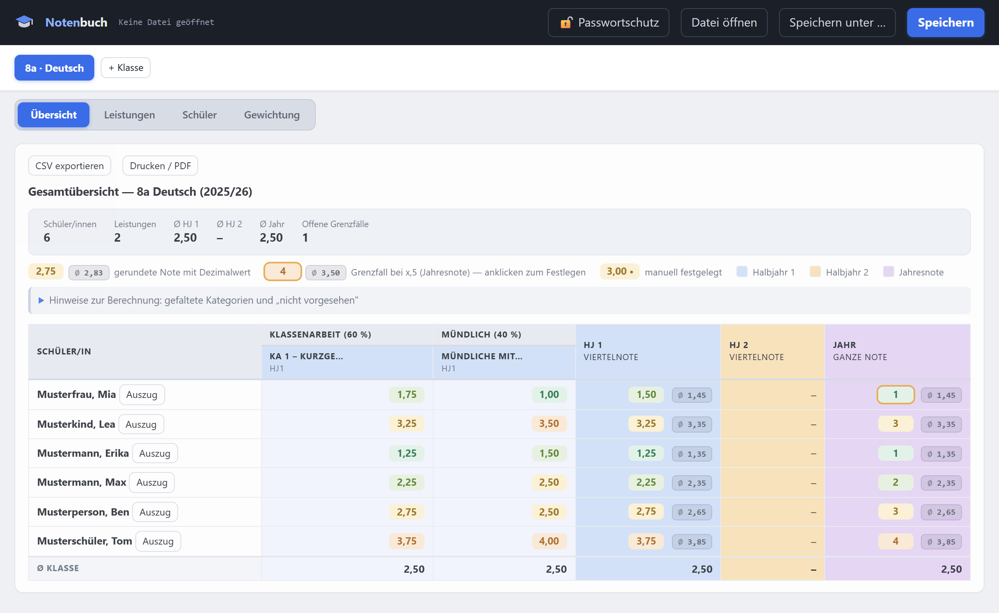

Inhalt
- Starten & zum Startbildschirm hinzufügen
- Speichern verstehen
- Eine Klasse anlegen
- Schüler/innen eintragen & Notizen
- Eine Leistung anlegen
- Punkte eingeben, Notenschlüssel & Notenspiegel
- Diktate & mündliche Tendenzen
- Die Übersicht lesen
- Einzelauszug pro Schüler/in
- Gewichtung einstellen
- Passwortschutz & Rückgängig machen
- Exportieren & Drucken
Starten & zum Startbildschirm hinzufügen
Rufe die Adresse oben in deinem Browser auf. Beim ersten Start ist alles leer — das ist normal, du legst deine Daten gleich selbst an (Schritt 3).
Speichern verstehen
Deine Noten liegen nicht im Browser, sondern in einer eigenen Datei (Endung .json), die du selbst anlegst. Wie genau das Speichern abläuft, hängt vom Browser ab:
Klicke nach dem Einrichten einmal auf Speichern und wähle einen Speicherort — z. B. 9b_deutsch.json in deinem Dokumente-Ordner. Ab dann speichert der Browser jede Änderung automatisch in diese Datei (der Status oben in der Kopfleiste zeigt es an). Beim nächsten Mal: Datei öffnen → deine Datei auswählen, fertig.
Hier öffnet Speichern stattdessen das Teilen-Menü von iOS/iPadOS:
- Beim allerersten Mal: Klasse(n) anlegen, dann auf Speichern tippen. Im Teilen-Menü „In Dateien sichern“ wählen und einen Ort aussuchen (z. B. Auf meinem iPad oder iCloud Drive → Ordner „Notenbuch“). So legst du deine .json-Datei einmalig an.
- Ab jetzt: Datei zu Beginn der Sitzung über Datei öffnen laden.
- Es gibt kein automatisches Speichern. Nach jeder Änderung — neue Note, neue Schülerin, geänderte Gewichtung — musst du selbst auf Speichern tippen und im Teilen-Menü wieder „In Dateien sichern“ wählen. Wähle dort denselben Ordner und denselben Dateinamen wie beim letzten Mal — nur dann fragt iOS „Ersetzen?“ und überschreibt die bestehende Datei, statt eine Kopie anzulegen.
Eine Klasse anlegen
Klicke oben links auf + Klasse. Trage Bezeichnung (z. B. „9b“), Fach und Schuljahr ein und wähle das Notensystem:
- Note 1–6 — für die Sekundarstufe I. Es gibt Halbjahresnoten (Viertelnoten) und eine Jahresnote.
- Notenpunkte 0–15 — für die Kursstufe. Jedes Halbjahr ist eine eigenständige Endnote, es gibt keine Jahresnote.
Schüler/innen eintragen & Notizen
Wechsle oben auf den Reiter Schüler. Tippe oder füge die Namen in das große Textfeld ein — ein Name pro Zeile, z. B. „Müller, Anna“. Ein Klick auf Hinzufügen übernimmt alle auf einmal; die Liste wird automatisch alphabetisch sortiert.
Neben jedem Namen öffnet 📝 Notizen ein Fenster für datierte Notizen — etwa ein GFS-Thema oder Gesprächsnotizen aus einem Elterngespräch.
Eine Leistung anlegen
Unter Leistungen → + Neue Leistung legst du eine Klassenarbeit, einen Test oder eine mündliche Note an:
- Art — die Kategorie (Klassenarbeit, Test, Mündlich, GFS …). Welche es gibt, stellst du unter „Gewichtung“ ein (Schritt 10).
- Faktor — gewichtet die Leistung innerhalb ihrer Kategorie. Ein Test mit Faktor 0,5 zählt halb so viel wie einer mit Faktor 1.
- Erfassung — wie die Note zustande kommt:
- Punkte + Teilaufgaben — die Note wird über einen Notenschlüssel berechnet (Schritt 6).
- Note direkt — du trägst die fertige Note ein.
- Diktat (Fehleranzahl) — nur im Notensystem „Note 1–6“ (Schritt 7).
- Mündliche Tendenzen — laufende Dokumentation mündlicher Mitarbeit über mehrere Tage (Schritt 7).
Punkte eingeben, Notenschlüssel & Notenspiegel
Nach dem Anlegen öffnet sich die Eingabemaske (später erreichbar über Noten eingeben). Von oben nach unten:
- Teilaufgaben — lege für jede Aufgabe die maximalen Verrechnungspunkte (VP) fest. Die Gesamtpunktzahl ergibt sich automatisch.
- Notenschlüssel — erzeuge ihn per Knopfdruck: Linear verteilt die Noten gleichmäßig; Mit Knick lässt dich die Bestehensgrenze frei wählen (z. B. Note 4,0 ab 50 %). Jeder Schwellwert in der Tabelle bleibt danach von Hand anpassbar.
- Punkteeingabe — trage je Schüler/in die Punkte pro Teilaufgabe ein. Summe und Note erscheinen sofort, unten läuft der Klassendurchschnitt (Ø) live mit.
- Notenspiegel — am Ende der Seite zeigt ein Balkendiagramm, wie sich die Klasse über die Notenstufen verteilt. Es aktualisiert sich automatisch bei jeder Eingabe und steht bei jeder Erfassungsart zur Verfügung, nicht nur bei Punkte-Leistungen.
Diktate & mündliche Tendenzen
Diktate (Fehleranzahl)
Statt Verrechnungspunkten trägst du hier die Anzahl der Fehler ein. Wortzahl des Diktats und den Fehleranteil eintragen, ab dem es eine Note 4 gibt (optional auch für Note 1 und Note 6) — daraus entsteht ein Fehler-Notenschlüssel (weniger Fehler = bessere Note), der wie bei Punkte-Leistungen in der Tabelle darunter von Hand nachjustierbar bleibt. Danach je Schüler/in die Fehleranzahl eintragen; die Note erscheint sofort.
Mündliche Tendenzen (++ / + / 0 / − / −−)
Gedacht für die laufende Dokumentation mündlicher Mitarbeit über das Halbjahr — statt einer einzelnen Note trägst du hier für jeden Unterrichtstag eine Tendenz je Schüler/in ein.
- Skala — jeder der fünf Tendenzen ist ein Notenwert zugeordnet (z. B. „++“ = Note 1), aus dem der Durchschnitt gebildet wird. Frei editierbar, wie der Notenschlüssel bei Punkte-Leistungen.
- Datum wählen, dann antippen — oben das Datum für den aktuellen Tag einstellen, danach pro Schüler/in eine der fünf Wertungen antippen. Ein erneuter Klick auf die bereits aktive Wertung eines Tages löscht sie wieder — so lassen sich auch vergangene Tage nachträglich korrigieren.
- Verlauf & Ø — je Schüler/in zeigt eine Spalte die bisherigen Wertungen in chronologischer Reihenfolge, eine weitere den daraus gebildeten Durchschnitt.
Die Übersicht lesen
Der Reiter Übersicht ist das Herzstück: alle Leistungen, Halbjahres- und Jahresnoten auf einen Blick, oben die Kennzahlen der Klasse, unten der Durchschnitt jeder Spalte.
- 3,25 — die gerundete Note; die kleine graue Zahl daneben ist der ungerundete Dezimalwert.
- 4 — orange umrandet = Grenzfall (Dezimalwert nahe x,5). Klicke auf die Zelle, um die Note pädagogisch festzulegen.
- 4 • — der Punkt zeigt: Diese Note wurde manuell festgelegt. Zum Zurücksetzen die Zelle anklicken und das Feld leer lassen.
- Neben jedem Namen öffnet Auszug den druckfertigen Einzelauszug dieser Person (Schritt 9).
Einzelauszug pro Schüler/in
Ein Klick auf Auszug in der Übersicht (Schritt 8) öffnet eine druckfertige Einzelseite für genau eine Person — ideal für ein Elterngespräch oder eine Zeugniskonferenz, ohne die Noten der übrigen Klasse preiszugeben. Sie zeigt alle Leistungen nach Kategorie sortiert, Halbjahres- und Jahresnote sowie — falls vorhanden — die Notizen dieser Person.
Über ← Zurück zur Übersicht geht es zurück, über Drucken / PDF lässt sich genau diese Einzelseite drucken oder als PDF sichern.
Gewichtung einstellen
Unter Gewichtung bestimmst du, wie sich die Gesamtnote zusammensetzt. Jede Kategorie hat entweder eine eigene Gewichtung in Prozent (die Summe sollte 100 % ergeben) oder sie „zählt zu“ einer anderen Kategorie — z. B. fließen Tests wie eine zusätzliche Klassenarbeit in deren Topf. Über + Kategorie hinzufügen legst du bei Bedarf weitere Kategorien an (z. B. „Projekt“ oder „Vokabeltest“).
Kategorien, in denen ein/e Schüler/in noch keine Note hat, werden für sie automatisch ignoriert — die übrigen Gewichte rechnen anteilig hoch. Deine Übersicht stimmt also auch mitten im Schuljahr.
Passwortschutz & Rückgängig machen
Passwortschutz
Über den Knopf 🔓 Passwortschutz oben in der Kopfzeile lässt sich die Datei clientseitig verschlüsseln (mindestens 4 Zeichen). Ist der Schutz eingerichtet, zeigt der Knopf 🔒 Geschützt; beim nächsten Öffnen der Datei wird das Passwort abgefragt.
Rückgängig machen
Löschst du versehentlich einen Schüler, eine Leistung, eine Klasse oder eine Kategorie, erscheint unten kurz ein Hinweis mit einem Rückgängig-Knopf — ein Sicherheitsnetz, besonders wichtig, weil Chrome/Edge Änderungen bereits nach 1,5 Sekunden automatisch in die Datei speichern. Das Angebot gilt nur für die jeweils letzte Löschung und verschwindet nach der nächsten anderen Änderung oder von selbst nach rund 15 Sekunden.
Exportieren & Drucken
Oben in der Übersicht findest du zwei Knöpfe:
- CSV exportieren — erzeugt eine Tabelle für Excel/LibreOffice (z. B. für Zeugniskonferenzen). Auf iPad/iPhone landet sie ebenfalls im Teilen-Menü zum Sichern in „Dateien“.
- Drucken / PDF — öffnet den Druckdialog für die Gesamtübersicht; dort „Als PDF speichern“ wählen. Erklärtexte und Knöpfe werden im Ausdruck automatisch ausgeblendet. Für eine einzelne Person eignet sich stattdessen der Einzelauszug (Schritt 9).
Noch Fragen offen? Viele Antworten stehen direkt in der App: Die grauen Info-Boxen und aufklappbaren „Hinweise“ erklären jede Ansicht an Ort und Stelle. Und weil alles in einer Datei liegt: Datei kopieren = Backup, Datei auf ein anderes Gerät mitnehmen = umgezogen.